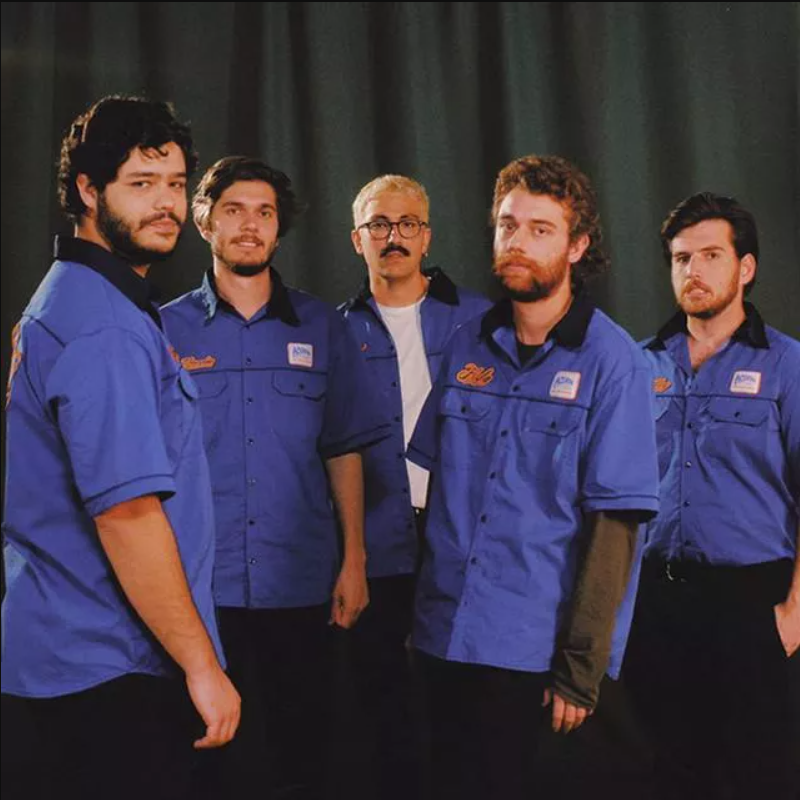
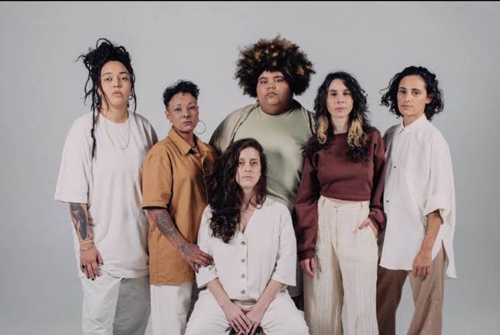
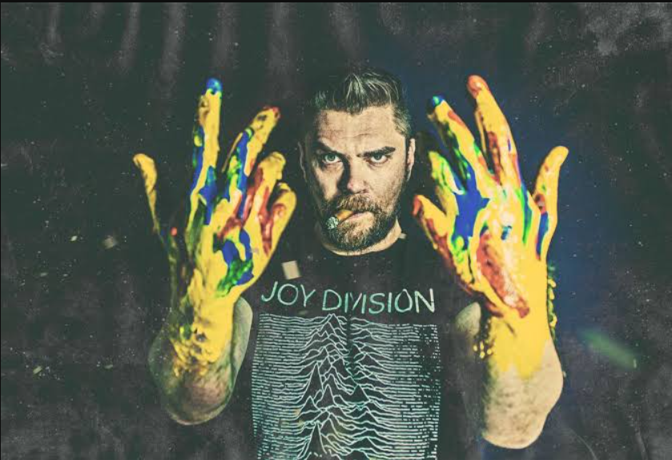
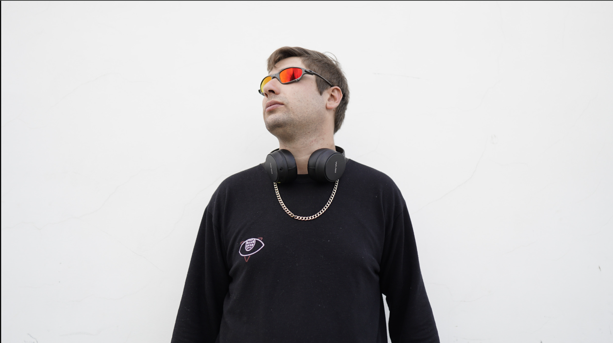

🏠 Início
Bem-vindo ao Arte de Curitiba! Este site foi criado para divulgar artistas reais da cidade, valorizando a cultura local e dando visibilidade a talentos da música, arte urbana e produção audiovisual.
Curitiba possui uma cena artística muito rica, com artistas que se destacam nacionalmente e também na cena independente.
🌟 Artista em destaque
Jovem Dionísio é uma banda de indie pop e bedroom pop brasileira formada em 2019 na cidade de Curitiba, Paraná. É composta por Bernardo Pasquali no vocal, Rafael Dunajski Mendes 'Fufa' na guitarra, Gustavo Karam no baixo, Bernardo Hey 'Ber Hey' no teclado e Gabriel Dunajski Mendes 'Mendão' na bateria e composições.
🎨 Artistas
🎧 Jovem Dionísio
Banda indie/pop formada em Curitiba, com grande sucesso nacional.
Instagram: @jovemdionisio

🎤 Mulamba
Banda formada em Curitiba com músicas sobre empoderamento feminino e questões sociais.
Instagram: @mulambaoficial

🎨 Butcher Billy
Artista gráfico de Curitiba conhecido internacionalmente por suas ilustrações pop art.
Instagram: @butcherbilly

🎧 DJ Ricetti
DJ e produtor musical atuante na cena eletrônica de Curitiba.
Instagram: @djricetti

📞 Contato
Email: contato@artecuritiba.com
Instagram: @artecuritiba
Imagens e vídeos utilizados apenas para fins educativos.